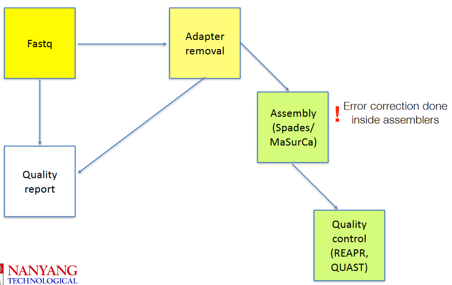
4 De Novo Sequencing
Tools such as MaSurCA (which will be used during the practical) are used to make genomes from raw data after the data has had its primers (from earlier Illumina sequencing) removed. Then, we use tools like quast to perform quality control on it.
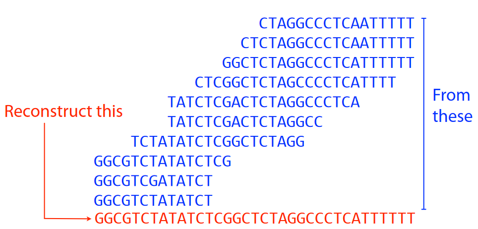
That said, the main point of an assembly is shown in the picture above. Given a ton of overlapping DNA sequences, we want to try to reconstruct the actual genome - like putting together puzzle pieces to make a puzzle1.
4.1 Laws of Assembly
There are two main laws:
First Law
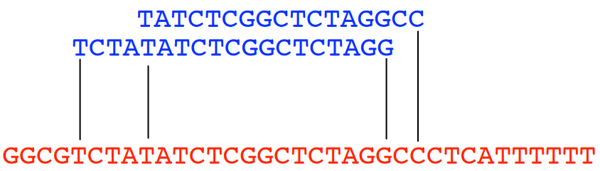
First Law of Genome Assembly Let’s say that we have two different reads (i.e., sequences) in our raw data: “A” and “B”. If the last few letters of “A” are similar to the beginning letters of “B”, then we can guess that “A” and “B” probably overlap with one another in the actual genome.
Second Law
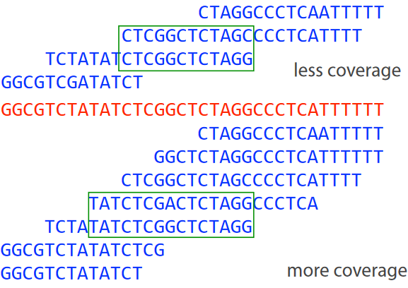
Second Law of Genome Assembly Let’s say that we have a whole bunch of reads in our raw data. If these reads have a higher coverage (i.e., they’re read many times), then we will have more overlaps in our final genome.
Third Law
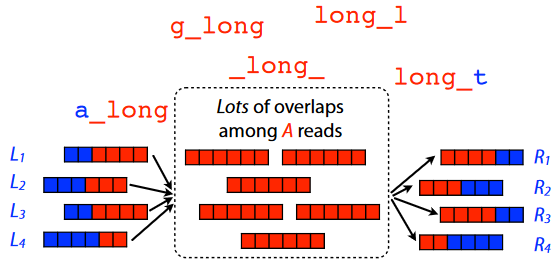
Third Law of Genome Assembly How long our reads are and how repetitive those patterns are in the genome can make genome assembly challenging.
So, the best thing to do in this scenario is to just get a long read that cover(s) the entire repetitive sequence(s).
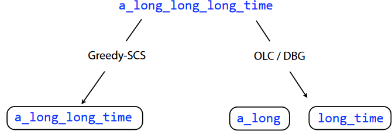
Outcomes of Different Resolving Approaches Depending on how we choose to go about this issue, we can get different results. Because of this, we tend to just handle repeats that cannot be resolved by leaving them out altogether. But, we must keep in mind that if we do do this, then our assembly will be in fragments or contigs for short.
Hence, in de novo assembly, our ultimate goal is to really just find overlapping, short reads and put them into longer, continuous DNA sequences (i.e., like piecing together a puzzle from scratch). We use two different approaches for the most part:
- Shortest Common Substring (i.e., SCS)
- Overlap Layout Concensus
- de Brujin Graphs
But regardless of which of the above that we end up doing in the end, one thing’s for certain: we use graph theory for all of these methods!
4.2 Overlap Graphs
There are two main terminologies to know when it comes to graphs.
Node
This just means a “read” or a “k-mer” in the raw data.
Edge
This is a line connecting two nodes. If this line is an “arrow”, then we say that this edge is directed.
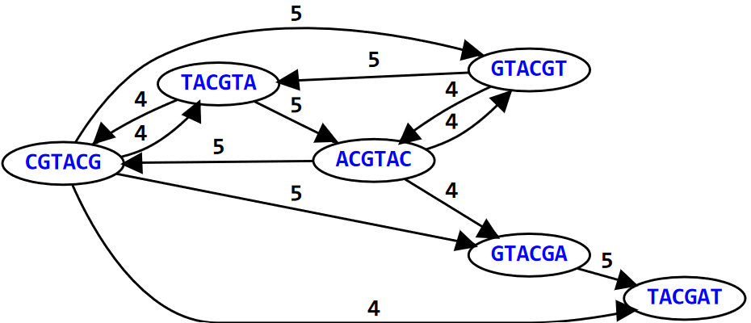
In the above graph (i.e., an example), the graph represents the 6-mers of the DNA sequence: GTACGTACGAT. For simplicity’s sake, we only draw directed edges (i.e., the arrows) between nodes (i.e., the k-mers); the weight or number above the edge shows how many letters each k-mer overlaps with the other.
4.2.1 Hamiltonian Paths
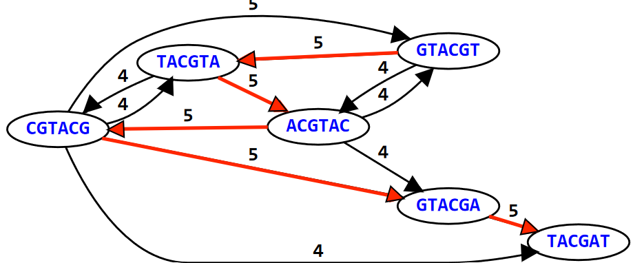
We say that a graph is Hamiltonian if and only if we can visit all of its nodes at least once. In this same example, if we try to overlap the different K-mers to form the sequence GTACGTACGAT, we see the path that this sequence takes in the graph visits the 6-mers at least once!
4.3 Shortest Common Substring (i.e., SCS)
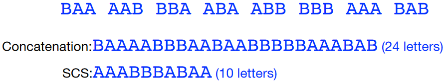
Here’s how this works in a nutshell:
- We are given a whole bunch of K-mers.
- We then smoosh all of these k-mers together to form one big, long string.
- Our job is to then find the shortest substring of that “big, long string” that contains the original k-mers as substrings. This “shortest substring” is called the shortest common substring (i.e., SCS).
Prof. Jarkko mentions that finding the SCS is NP complete: what this basically means is that the longer the “big, long string”, the more exponential the time to find the SCS becomes (hence making it all the more challenging).
4.3.1 Greedy SCS Algorithm
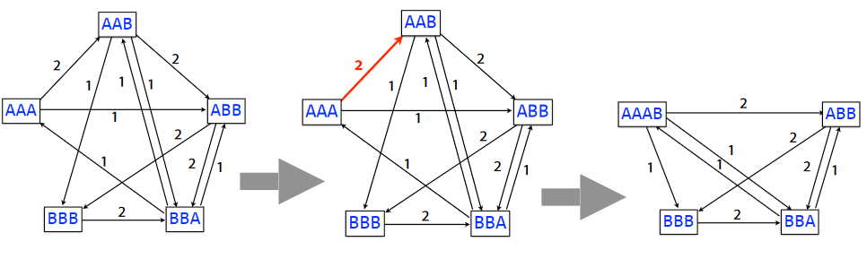
If an algorithm is greedy, this basically means that it aims to maximize something about it.
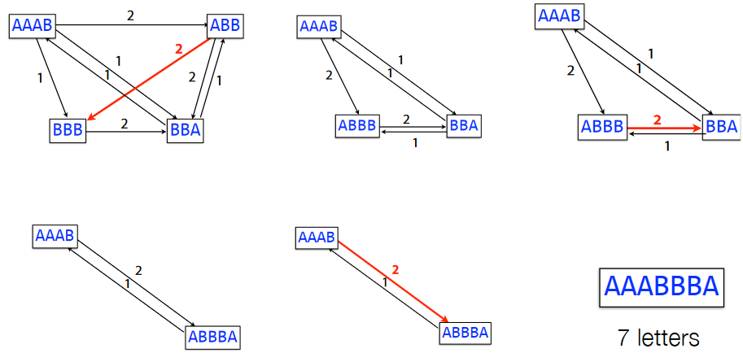
In this greedy SCS problem, we first start with the overlap graphs for the k-mers. Then, we combine the k-mers based on the weights of their edges until we get the substring (taking to get rid of the overlaps in the process).
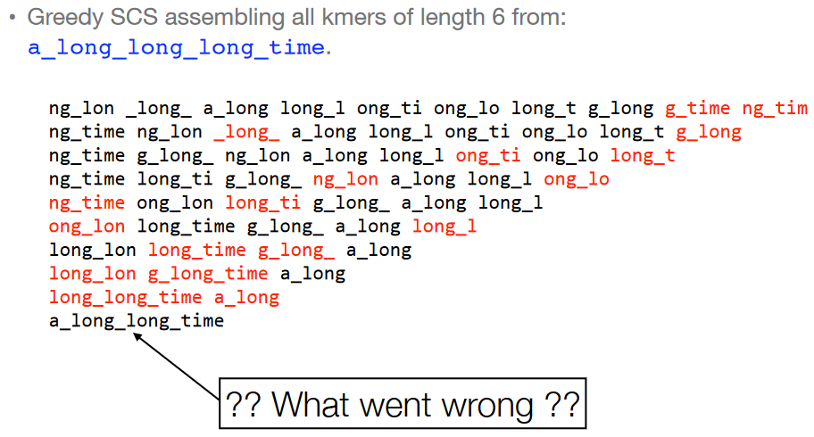
However, just because an algorithm is greedy doesn’t always mean that it will lead to the best (i.e., optimal) outcome. If we look at the 6-mers of the overlap graph of the string a_long_long_long_time and try to do the greedy SCS problem for it, we see that we just end up with a_long_long_time. This isn’t the same string!
Interestingly enough, if we use k-mers with \(k = 8\), we see that the final string that’s formed is actually correct.
4.4 Overlap Layout Consensus (i.e., OLC)
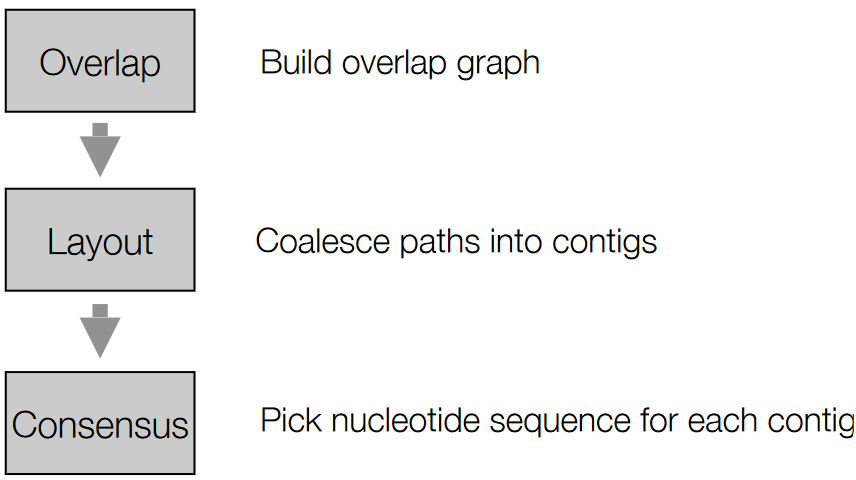
The above graphic summarizes the steps involved in OLC.
4.4.1 Overlap
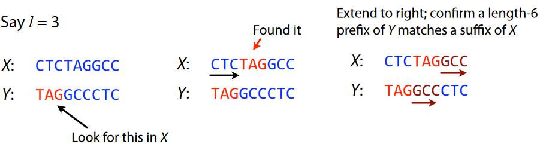
An overlap refers to the ending of a string having at least a certain amount of matches with the beginning of another string. In the above example, we have two strings “X” and “Y”.
If we say that we want at least three matches, we start from the beginning of “Y” and see that the sequence “TAG” is found in the middle of “X” - the same could more or less be said for “GCC” too.
4.4.1.1 Layout of the Overlap Graph
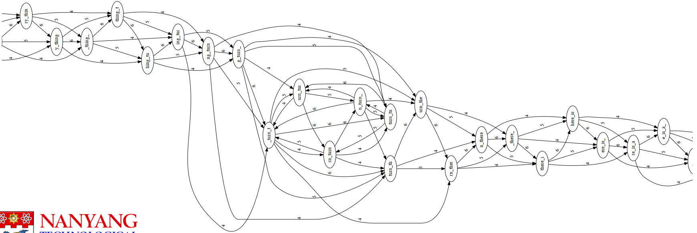
to_every_thing_turn_turn_turn_there_is_a_seasonThe above layout graph is super unruly and needs to be simplified.
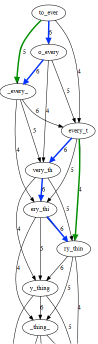
So, the first thing we need to do is to just simplify this graph. If we take a closer look at the original graph, we see that some edges can be inferred from other edges - in this case, the green arrows can be inferred from the blue ones.
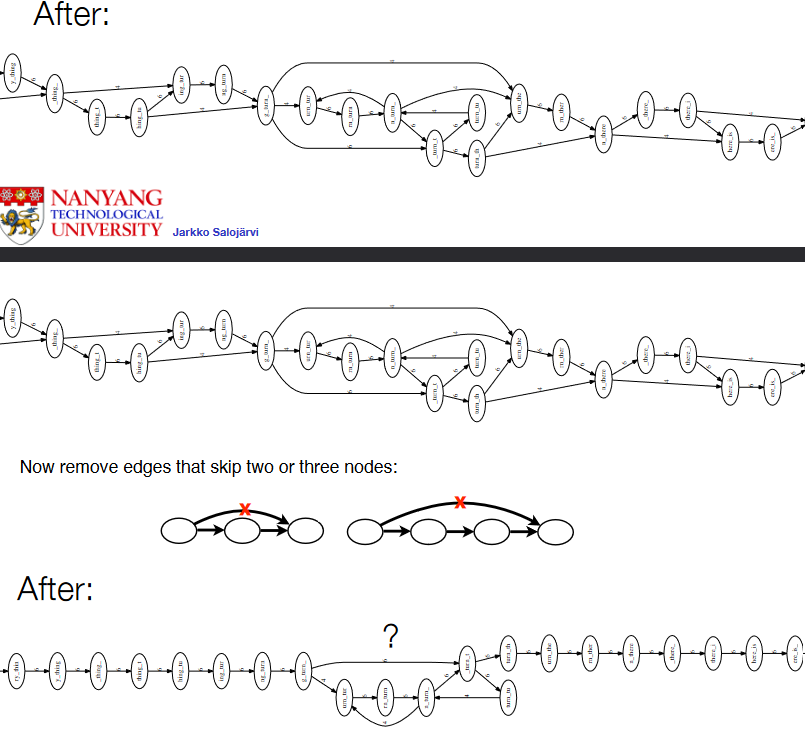
We then remove these green edges - first, the ones that skip a node, and then next, the ones that skip two or more nodes.
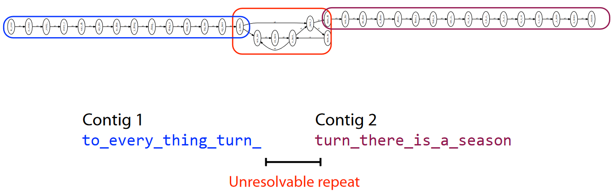
However, we see that the stuff in the red box cannot be resolved further.
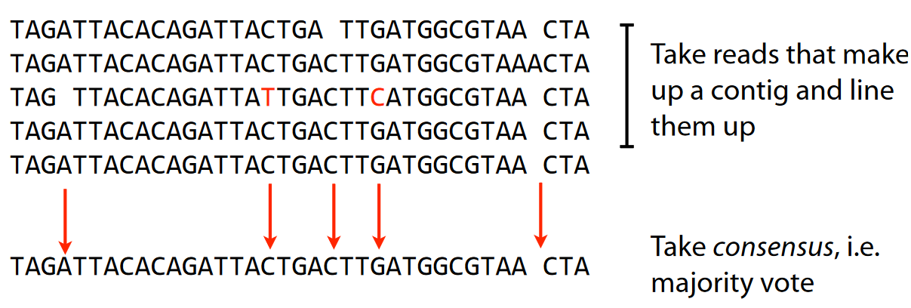
So, what scientists do is to get the contigs, line them up, and take the majority vote of the sequences. So, for example, if one nucleotide has mostly “A”s in a spot, then scientists assume that that particular nucleotide in space is an “A”.
4.4.1.2 Caution
This entire process (i.e., the one in the preceding sub-sub-subsection) is super slow, especially when you realize that many sequencing datasets have hundreds of millions or billions of reads.
And even if you could make the overlap graph, the graph would be ginormous!
4.5 De Brujin Graphs
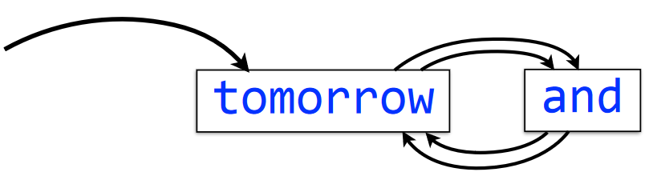
tomorrow and tomorrow and tomorrowThe meaning of an edge hasn’t changed here, but there are new temrs to know:
Multigraph
This is a graph that has more than one node coming into a node.
Indegree
This refers to the amount of arrows (i.e., directed edges) coming into a node.
Outdegree
This refers to the amount of arrows (i.e., directed edges) coming out of a node.
Balanced nodes
The indegree and the outdegree of a node are the same.
Semi-balanced node
The indegree differs by the outdegree of the node by one.
Connected graph
This just means that all nodes in a graph can be reached by some other node.
As a super short trick, if a directed graph (i.e., graph with arrows for edges) has two semi-balanced nodes at the very most, then that graph is Eulerian.
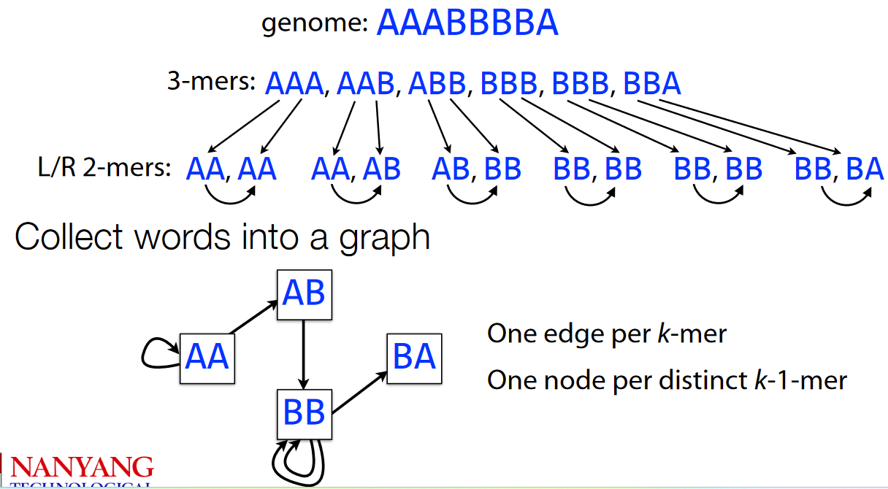
AAABBBBAFirst, we split the genome AAABBBBA into 3-mers before splitting the 3-mers into 2-mers.
4.5.1 Eulerian Walks
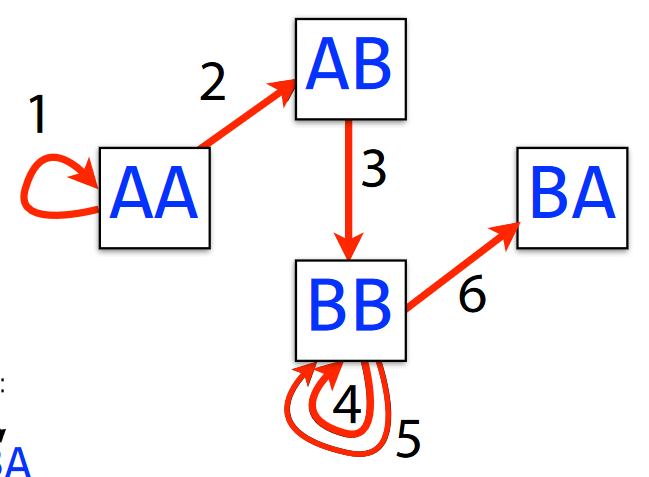
AAABBBBAWe say that a graph has a Eulerian walk if and only if each edge can be crossed exactly once.
Generally speaking, we can find a Eulerian walk in linear time - meaning that the mode edges we have in a graph, the tougher and longer it is to find an Eulerian walk (obviously).
4.5.2 Making a De Brujin Graph for a Genome
First things first, we need to assume that each K-mer doesn’t have any errors and is only sequenced once.
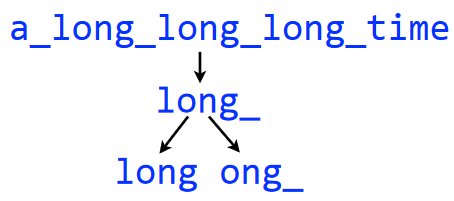
a_long_long_long_time into 5-Mers and then 4-MersIn the above example, we make a de Brujin graph with the string a_long_long_long_time using 5-mers. We then begin by splitting each 5-mer into two pairs of of \(k - 1\)-mers - in this case, 4-mers.
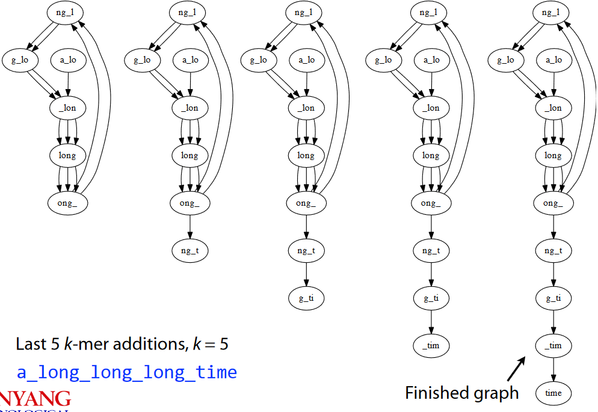
a_long_long_long_time into 5-Mers and then 4-MersIn the end, our graph looks something like the one shown above. Also note that the finished graph is Eulerian as it only has two semi-balanced nodes at best.
4.5.3 Problems with De Brujin Graphs
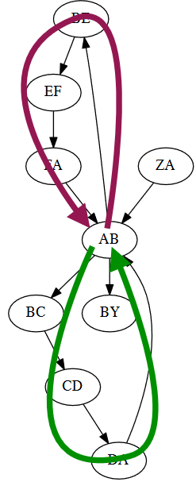
If there is a repeat in a sequence, this can cause issues. Here, we see that there are two equally-likely outcomes.
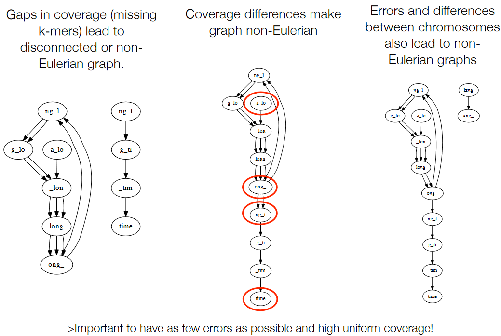
As in, errors like the following can make the graph not appear good:
- Gaps in coverage (i.e., missing k-mers)
- Coverage differences
- Errors and differences between chromosomes.
4.6 Error Correction
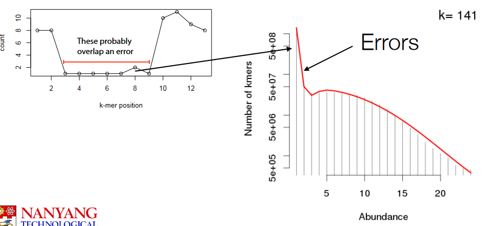
If we look at the K-mer histogram, we see that frequent k-mers tend to turn into infrequent ones.
So, here’s what we can do…
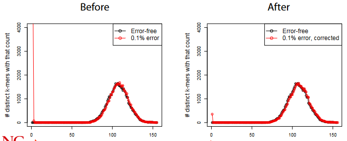
For each k-mer in each read, we do the following:
- If the k-mer count is less than some value, we look at the k-mer’s neighbors within some distance.
- If the said neighbors have counts more than that “some value”, we replace the k-mer in question with the neighbor.
4.7 How Much Data for a De Novo Assembly?
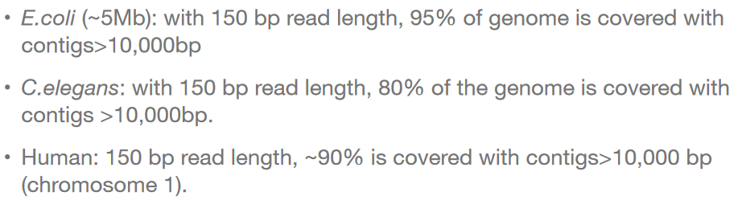
The problem is that the entire assembly is probably longer than the repeats in the genome. We could sequence and also re-sequence a bacterial genome with read lengths of 20 to 30 base pairs or nucleotides.
However, with longer genomes, significant proportions of the genome are uncovered.
Though - in practice - this is something that is difficult to do as the reads from the machine don’t always overlap so nicely.↩︎